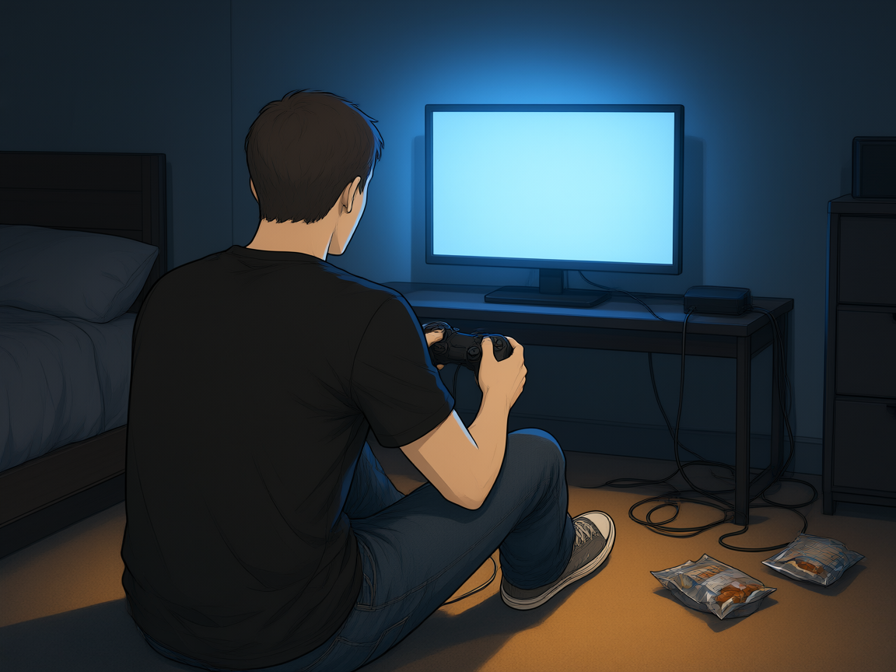
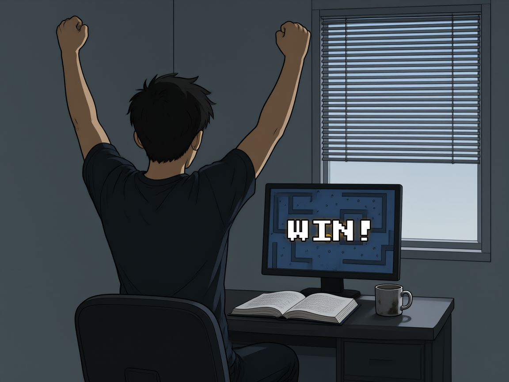
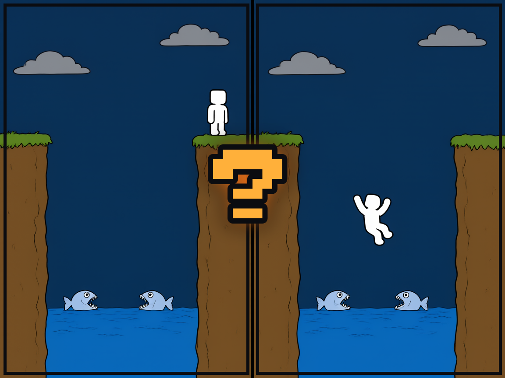
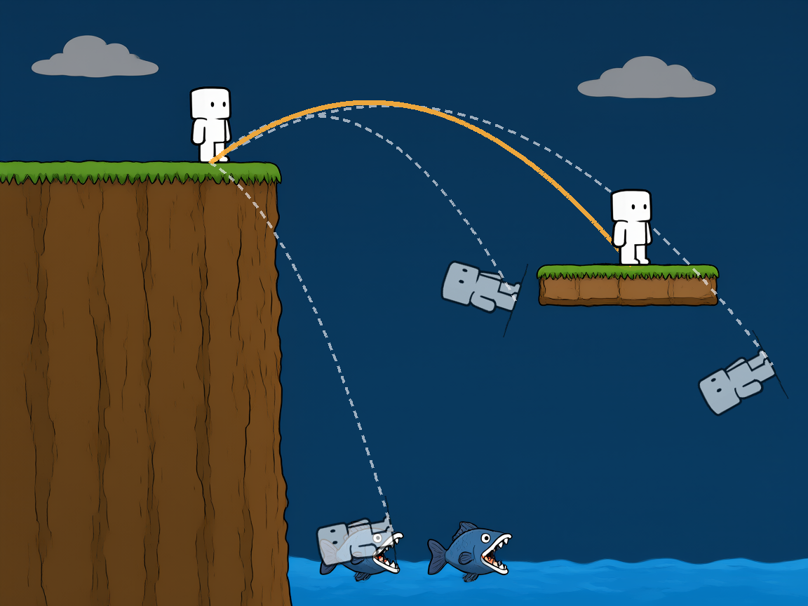
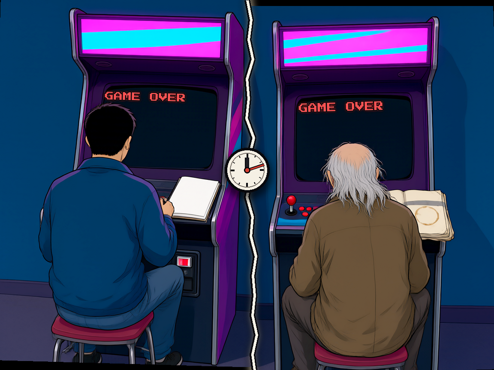
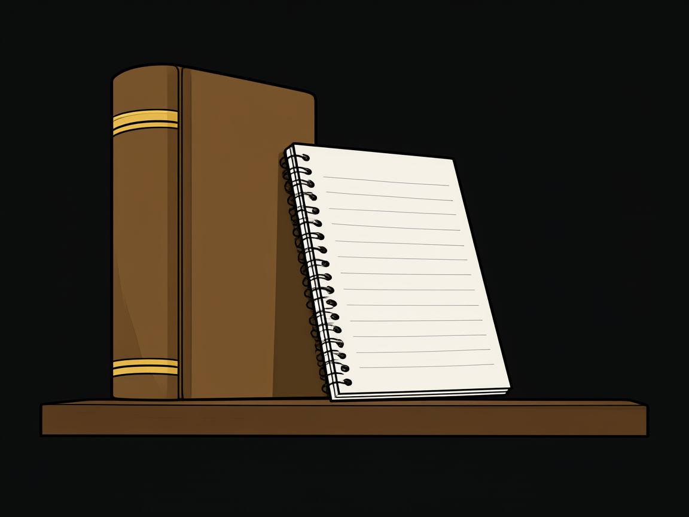
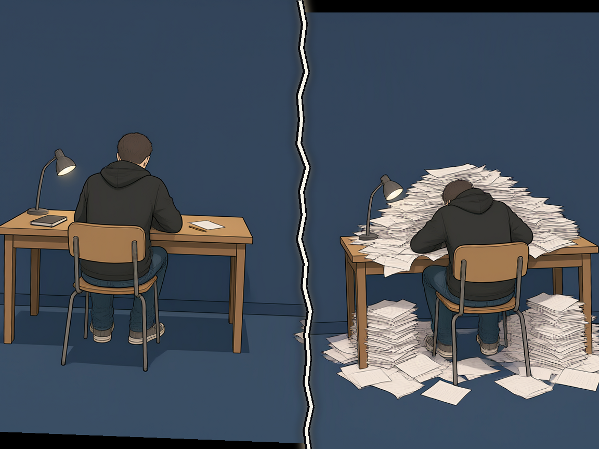
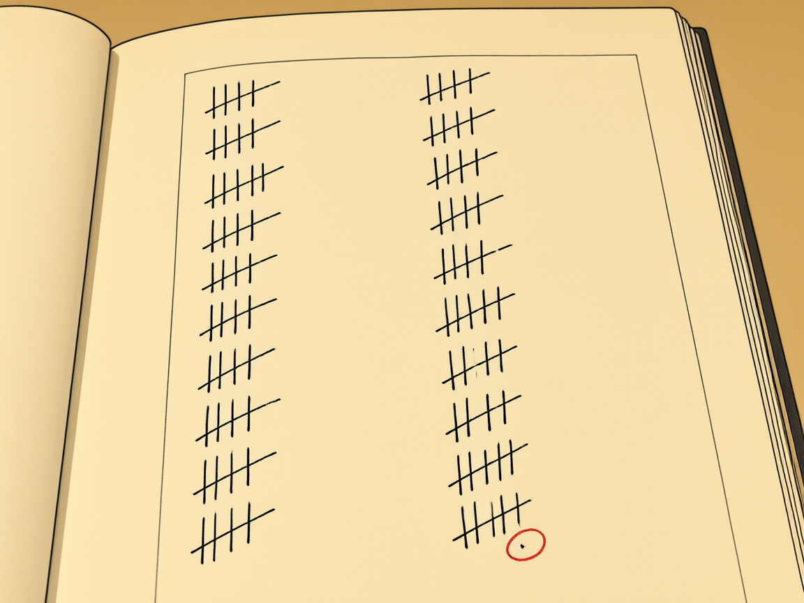
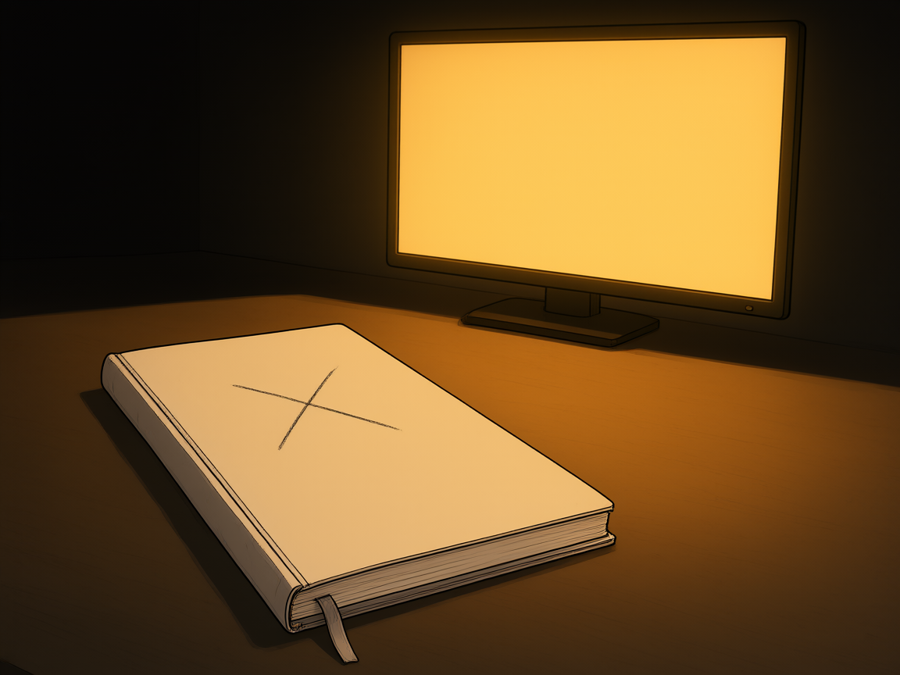

Todo mundo tem uma teoria de como jogar melhor.
Q01a convicção
- No slide
- Uma frase. Nenhuma fonte: a tela não afirma um fato, ela descreve o aluno.
- A fala
- Todo aluno entra no curso com uma técnica própria — e não é preguiça, é uma técnica que ele mesmo adotou e nunca testou. Quase sempre é reler, grifar e virar a noite na véspera. Dunlosky e colegas revisaram dez técnicas de estudo em uso real: as duas mais populares, releitura e grifo, ficaram entre as de menor utilidade; as de maior utilidade — prática de recuperação e prática distribuída — são justamente as que quase ninguém usa.
- Por que esta cena
- O quarto escuro e o controle na mão dizem que a técnica dele é jogar, sem que a imagem precise julgar. Se a cena mostrasse bagunça, o aluno se defenderia; ela mostra convicção — e é com a convicção que se começa.
- A fonte
- Dunlosky, J., Rawson, K. A., Marsh, E. J., Nathan, M. J. & Willingham, D. T. (2013). Improving students' learning with effective learning techniques. Psychological Science in the Public Interest 14, 4–58. doi:10.1177/1529100612453266
A dele era virar a noite.
Q02a técnica evidência completa na F3
- No slide
- Uma frase. Sem fonte: a evidência de sono é da Fase 3, não deste capítulo.
- A fala
- A técnica é simples: estudar até tarde na véspera, dormir pouco e compensar com café. O que ele compra com as horas extras não é tempo de estudo — é mais exposição ao mesmo material, paga com a noite em que o cérebro reativaria e estabilizaria o que ele acabou de estudar. A conta fecha negativa: ele troca consolidação por releitura. O mecanismo e os números ficam para a Fase 3, cujo tema é sono; aqui basta que ele veja a troca.
- Por que esta cena
- A madrugada é a técnica visível no corpo, não no argumento. A cena não mostra alguém sofrendo — mostra alguém convencido, o que é mais fiel e mais desconfortável.
- A fonte
- Rasch, B. & Born, J. (2013). About sleep's role in memory. Physiological Reviews 93, 681–766. doi:10.1152/physrev.00032.2012 — desenvolvido na F3 (MAPA-JOGADOR.md §2).

Funcionou uma vez. Isso não é evidência.
ATBC Study Group (1994) · doi:10.1056/NEJM199404143301501
Q03a virada
- No slide
- A frase e a fonte do ensaio que derrubou a crença — não a do estudo que a criou. É a primeira tela do capítulo que acusa alguma coisa, então é a primeira que precisa dizer de onde vem.
- A fala
- Ele virou a noite, fez a prova, tirou nota melhor que a anterior — e concluiu causa. Só
que nota oscila: quem foi mal tende a ir melhor da próxima vez sem ter mudado nada, porque é
regressão à média, não mérito. Com uma observação, "melhorou" não distingue "a técnica
funcionou" de "a nota voltou ao normal".
E quando o número de observações é grande, o erro não desaparece — muda de forma. Estudos observacionais mostravam que quem comia mais frutas e verduras ricas em betacaroteno tinha menos câncer de pulmão. A conclusão parecia óbvia, e virou pílula. No ensaio finlandês, com 29 mil fumantes, o grupo que tomou betacaroteno teve 18% mais câncer de pulmão. No americano, com 18 mil pessoas, o risco relativo foi 1,28 — e o estudo foi interrompido antes do fim. O que estava associado não era a causa: quem come verdura também fuma menos. Uma vez não é medida; e mil vezes sem comparar também não. - Por que esta cena
- O gesto de vitória é o instante exato em que a conclusão causal se forma na cabeça de quem estuda. A imagem tem que ser comemorativa, porque a frase tem que doer.
- A fonte
- Alpha-Tocopherol, Beta Carotene Cancer Prevention Study Group
(1994). The effect of vitamin E and beta carotene on the incidence of lung cancer and other
cancers in male smokers. New England Journal of Medicine 330, 1029–1035.
doi:10.1056/NEJM199404143301501
Omenn, G. S., Goodman, G. E., Thornquist, M. D. et al. (1996). Effects of a combination of beta carotene and vitamin A on lung cancer and cardiovascular disease. New England Journal of Medicine 334, 1150–1155. doi:10.1056/NEJM199605023341802
Regressão à média (a primeira metade da fala): Barnett, A. G., van der Pols, J. C. & Dobson, A. J. (2005). Regression to the mean: what it is and how to deal with it. International Journal of Epidemiology 34, 215–220. doi:10.1093/ije/dyh299

Para saber, tem que comparar.
Lind (1753) · ensaio de 1747
Q04instrumento 1 · comparação
- No slide
- A frase e a fonte. A história é contada em sala, não escrita no slide.
- A fala
- Comparar tem quase três séculos. Em 1747, a bordo do HMS Salisbury, James Lind pegou doze marinheiros com escorbuto, alojou todos juntos, com a mesma dieta e as mesmas condições, e deu a cada par um tratamento diferente: sidra, elixir de vitríolo, vinagre, água do mar, laranjas e limões, e noz-moscada. O par que recebeu cítricos sarou; os outros não. O achado em si não era novo — marinheiros já desconfiavam dos cítricos. O novo foi o método: dividir doentes em grupos, manter tudo igual e mudar uma coisa. É o instrumento mais velho desta lista, e é exatamente o que falta em quase todo conselho de estudo.
- Por que esta cena
- Dois desfechos do mesmo salto, na mesma tela. O que a imagem mostra não é o resultado: é a divisória. Sem as duas metades lado a lado não existe comparação — e é por isso que a barra que separa os quadros é preta e grossa.
- A fonte
- Lind, J. (1753). A Treatise of the Scurvy. Edinburgh: Sands, Murray & Cochran. Ensaio de 1747, 12 marinheiros, 6 tratamentos em pares de dois.

Uma coisa de cada vez.
Fisher (1935)
Q05instrumento 2 · isolar a variável
- No slide
- A frase e a fonte.
- A fala
- Se na mesma semana ele passou a dormir mais, a estudar com música e a usar um aplicativo novo, e melhorou, ele não sabe o que causou. Isso tem nome: variável confundida. Duas coisas que mudam juntas não se separam depois — não existe conta que desfaça a mistura, só um teste que mude uma de cada vez. Fisher formalizou a ideia em 1935, no desenho de experimentos agrícolas: sem variação controlada, o efeito que você mede é indistinguível do que mais mudou junto. É a mesma pergunta que a Fase 1 vai fazer em matriz, com outro nome.
- Por que esta cena
- Mesma cena, mesma altura, desfechos diferentes: só há várias trajetórias porque uma coisa mudou entre as tentativas. Se mudassem várias de uma vez, a imagem não estaria mostrando o instrumento — estaria mostrando o erro.
- A fonte
- Fisher, R. A. (1935). The Design of Experiments. Edinburgh: Oliver & Boyd.

Alguém que não mudou nada.
Hill (1965) · doi:10.1177/0035905X6505800103
Q06instrumento 3 · grupo de controle
- No slide
- A frase e a fonte.
- A fala
- O grupo de controle é a régua. Sem ele, "melhorou" compara o aluno com ele mesmo no passado — e o passado não serve de régua, porque o semestre muda, a prova muda, o assunto muda. Só quem não mudou nada isola o efeito do tempo e da matéria. Hill escreveu em 1965 os critérios que a medicina usa até hoje para decidir se uma associação é causa, e o primeiro deles é ter um grupo de comparação. É justamente o item que o aluno não tem quando avalia a própria técnica: ele nunca tem um "eu" que não mudou nada.
- Por que esta cena
- Dois corpos, um caderno novo e um gasto. O controle é uma pessoa que continua igual — não uma coluna numa tabela. Por isso a imagem tem dois homens e não dois gráficos.
- A fonte
- Hill, A. B. (1965). The environment and disease: association or causation? Proceedings of the Royal Society of Medicine 58, 295–300. doi:10.1177/0035905X6505800103

Virou livro. Não se repetiu.
Baumeister et al. (1998) · doi:10.1037/0022-3514.74.5.1252
Q07o caso · 1998
- No slide
- A frase e a fonte do estudo original. O ano do estudo vai na fala, não no slide.
- A fala
- 1998. Baumeister e colegas põem participantes numa sala com biscoitos recém-assados e rabanetes. Um grupo come biscoito; o outro é obrigado a comer rabanete e a resistir ao biscoito. Depois, os dois grupos tentam uma tarefa difícil. O grupo do rabanete desiste antes. A conclusão: força de vontade é um combustível finito — gastou numa tarefa, falta na outra. O resultado virou teoria, virou livro (Willpower, 2011), virou conselho de produtividade, virou aula. Inclusive deste curso. E o experimento não era fraude: era um resultado real, num grupo pequeno, que não sobreviveu à repetição.
- Por que esta cena
- O livro grosso e a folha grampeada. A assimetria é o argumento inteiro — o que vendeu não é o que se replicou. A lombada não tem título, por regra: o livro é "um livro", e a identificação vem da fala, com a referência na mão.
- A fonte
- Baumeister, R. F., Bratslavsky, E., Muraven, M. & Tice, D. M. (1998). Ego depletion: is the active self a limited resource? Journal of Personality and Social Psychology 74, 1252–1265. doi:10.1037/0022-3514.74.5.1252

Uma noite é anedota. Trinta são dados.
Hagger et al. (2016) · doi:10.1177/1745691616652873
Q08instrumento 4 · volume
- No slide
- A frase e a fonte da replicação.
- A fala
- 2016. Vinte e três laboratórios, replicação pré-registrada, 2.141 participantes, protocolo padronizado entre todos — não é "o mesmo estudo feito de novo", é o mesmo protocolo rodado em vinte e três lugares, com o resultado somado. O efeito medido: d = 0,04. Compare com o que se tinha: um experimento, um laboratório, algumas dezenas de pessoas. Estudo pequeno não erra só por azar: quando o efeito é pequeno, o estudo pequeno só chega à publicação quando o acaso ajuda, e a literatura passa a conter exatamente os resultados sortudos (Button et al., 2013).
- Por que esta cena
- A pilha tem altura. Quantidade precisa ser vista, não lida — e a mão sobre a pilha diz que alguém carrega aquilo, não que aquilo apareceu sozinho.
- A fonte
- Hagger, M. S. et al. (2016). A multilab preregistered replication
of the ego-depletion effect. Perspectives on Psychological Science 11, 546–573.
doi:10.1177/1745691616652873
Button, K. S. et al. (2013). Power failure: why small sample size undermines the reliability of neuroscience. Nature Reviews Neuroscience 14, 365–376. doi:10.1038/nrn3475

A diferença é maior do que o acaso?
d = 0,04 · IC95% [−0,07; 0,15] · Hagger et al. (2016)
Q09instrumento 5 · significância
- No slide
- A frase e a linha de números. É a única tela do capítulo com número — e o número não é gerado por IA, é digitado: é o resultado da replicação, não uma ilustração dela.
- A fala
- d = 0,04 quer dizer que os dois grupos diferem em 4% de um desvio-padrão. Na prática: indistinguível. E o intervalo de confiança de 95% vai de −0,07 a +0,15 — ele contém o zero, ou seja, "não há efeito" está dentro do que os dados permitem. Significância não é "deu diferença". É "a diferença é maior do que a variação que o acaso produziria sozinho". Quando o intervalo atravessa o zero, a resposta honesta é: não se sabe, e é isso que os dados dizem.
- Por que esta cena
- É o único ponto do capítulo em que o aluno vê uma diferença pequena e tem que julgar se ela é real — o que ele vai fazer a vida inteira com resultado de exame, de pesquisa e de conversa de corredor. A imagem não pode carregar o número; o número é do slide, digitado.
- A fonte
- Hagger, M. S. et al. (2016). Perspectives on Psychological Science 11, 546–573. doi:10.1177/1745691616652873 — k = 23 laboratórios, N = 2.141, d = 0,04, IC95% [−0,07; 0,15].

Antes de saber o que funciona, saiba como se sabe. Duas coisas que sempre andam juntas são uma só.
Anton, Álgebra Linear com Aplicações
Q10o fecho
- No slide
- A frase, a linha menor e a fonte da ponte (o livro adotado).
- A fala
- O capítulo entrega cinco perguntas e um caso que atravessa as cinco: comparado com quê; mudou mais de uma coisa; quem não mudou nada; quantas vezes foi observado; a diferença passa do acaso. A confissão, dita em voz alta: este curso já repetiu a ideia de força de vontade como recurso que acaba. Dizer isso é mais útil ao aluno do que fingir que nunca aconteceu. E a linha menor é a única antecipação de matemática do capítulo inteiro: quando duas coisas sempre andam juntas, elas são uma variável só disfarçada de duas. Na Fase 1 isso se chama dependência linear; o sistema fica indeterminado, e isso não é falha de quem pergunta.
- Por que esta cena
- O troféu no alto e, na base, os três jeitos de chegar nele — dormir, estudar, treinar — do mesmo tamanho, encostados, sem hierarquia. Nenhum deles aparece sozinho em momento algum: é a pergunta "qual dos três foi?" que fica sem resposta, e é exatamente isso que a Fase 1 cobra.
- A fonte
- Anton, H. Álgebra Linear com Aplicações. Livro adotado do curso — a ponte é desenvolvida na Fase 1, não aqui.